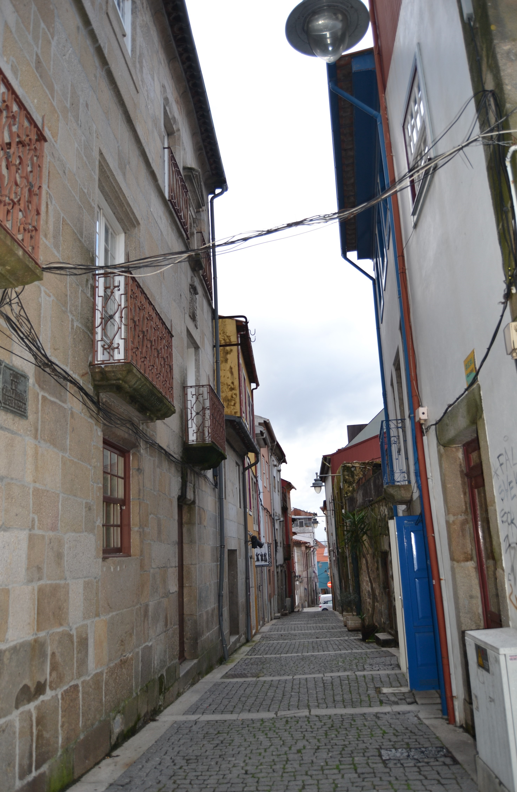

Rua de Sto. António
Descrição: Pequena rua, que ligava a rua das Travessas com o Terreiro de Santo António. De raiz romana,
não sabemos qual teria sido a sua função na cidade medieval. Em 1465 são transferidos para aqui os judeus e instalados no prédio mais interessante que hoje
aqui resta, e um dos mais estimáveis de toda a cidade, passando a ser denominada de Judiaria Nova.
Esta casa veio depois a pertencer ao cónego João de Meira Carrilho, que lhe pôs as suas armas. No final de quatrocentos, com a obrigação que os judeus sofreram de abjurar a sua religião
passou a ser chamada de Sto. António, nome que se mantém. Das 3 casas medievais que se vêem no alçado Nascente nada resta hoje infelizmente (uma já estava
em adiantada ruína). Do lado Poente conservam-se algumas casas, ainda. É curioso notar que as suas
construções têm um tipo de acabamento e proteção de janelas bem mais cuidado que a rua que
lhe era sequente, a das Chagas. Esta artéria, que felizmente ainda hoje conserva o seu traçado original, tinha 7 casas do lado
Nascente e 15 do Poente, sendo 6 e 11, respectivamente, prazos do Cabido.

Rua de Sto. António - nascente

Rua de Sto. António - poente

Imagem atual da rua: Rua de Sto. António

Imagem atual da rua: Rua de Sto. António
Lista de Casas:
- Casa 1 e 2: Enfiteuta - Francisco Soares de Novais, abade de S. Vicente do Bico, Foro - 290 reis e 2 galinhas
- Casa 3 e 4: Enfiteuta - José da Cunda e Sousa, Foro - 1420 e 4 galinhas
- Casa 5: Enfiteuta - Padre Miguel de Abreu, Foro - 170 reis e 6 galinhas
- Casa 6: Enfiteuta - Padre Miguel de Abreu, Foro - 90 reis e 2 galinhas
- Casa 7 e 8: Enfiteuta - Francisco Gonçalves Coudo, casado com Josefa Maria Madureira, Foro - 150 reis e 4 galinhas
- Casa 9: Enfiteuta - Felícia Teresa, viúva de Luís de Barros, Foro - 300 reis e 2 galinhas
- Casa 10: Enfiteuta - António Coelho, abade de S. Martinho de Alvito, Foro - 410 reis
- Casa 11: Enfiteuta - Os herdeiros de Miguel de Araújo Barreto, tenente, Foro - 350 reis e 2 galinhas
- Casa 12 e 13: Enfiteuta - Agostinho Marques do Couto, cónego, Foro - 1360 reis e 4 galinhas
- Casa 14: Enfiteuta - Agostinho Marques do Couto, cónego, Foro - 350 reis e 2 galinhas
- Casa 15: Enfiteuta - Padre Agostinho de Araújo Álvares, Foro - 240 reis e 2 galinhas
- Casa 16: Enfiteuta - Padre Agostinho de Araújo Álvares, Foro - 420 reis e 2 galinhas
- Casa 17: Enfiteuta - Os herdeiros de João Luís Moreira, boticário, Foro - 445 reis e 2 galinhas
- Casa 18: Enfiteuta - Os herdeiros de João Luís Moreira, boticário, Foro - 180 reis e 1 galinha
- Casa 19: Enfiteuta - Padre Manuel de Chaves, Foro - 430 reis e 2 galinhas
- Casa 20: Enfiteuta - António de Lima e Abreu, Foro - 220 reis e 2 galinhas
- Casa 21: Enfiteuta - António de Lima e Abreu, Foro - 520 reis e 2 galinhas
- Casa 22: Enfiteuta - António de Lima e Abreu, Foro - 440 reis e 2 galinhas